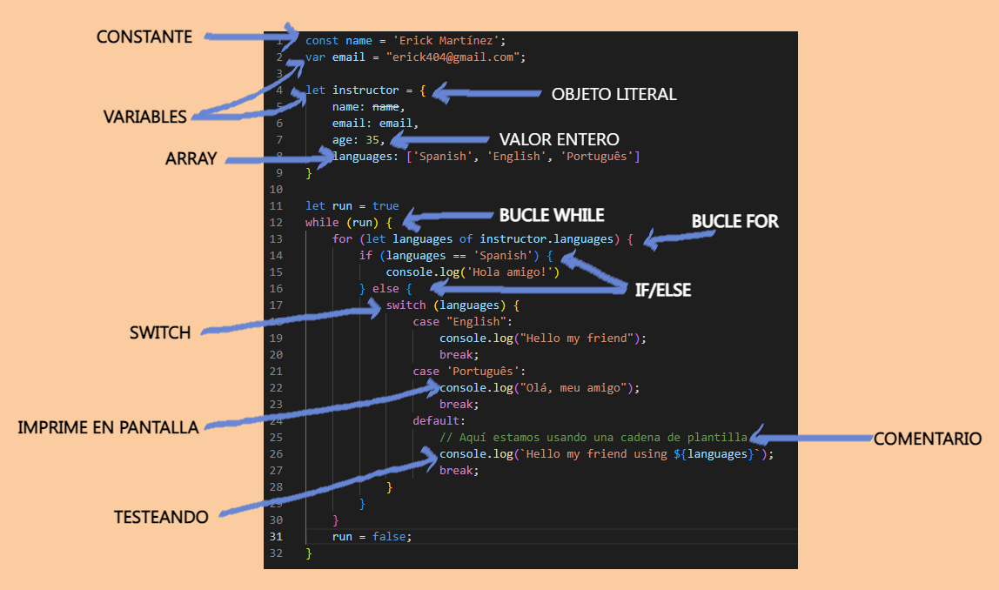

Sintaxis de JavaScript

La sintaxis de JavaScript no es tan diferente de
los lenguajes de programación como lo son Java, C#,
entre otros.
Los siguientes puntos explican las consideraciones
que se debe de tener a la hora de crear un código
JavaScript.
2. Distinción entre mayúsculas y minúsculas
Es un punto que está de más explicar, pero es necesario,
mas si nunca has tocado un lenguaje de programación o
por simple hecho de informar, se deja en claro que a la
hora de usar caracteres de tipo mayúscula que no correspondan
con alguna de las instrucciones, simplemente el código
no funcionaria.
3. Variables y sentencias
En este apartado, cabe destacar que al contrario de los
lenguajes de programación; JavaScript logra interpretar
el tipo de dato que se le esta otorgando, sin necesidad
de indicar si es una letra, un número, si es un número
entero o decimal.
En los lenguajes de programación esto ultimo hay que
indicarlo y es implícito. Otra cosa en la que se
deferencia JavaScript, es que, no es necesario el punto
y coma(;) para finalizar un sentencia o instrucción,
así que puede o no llevarla, aunque algunas personas
prefieren hacer uso del punto y coma por cuestiones de
orden.
4. Comentarios
Los comentarios son parte vital de cada editor o interprete
de código y JavaScript como todos, reconoce este tipo de herramientas
y su formato se mantiene ya sea comentar una línea(//comentario) o
comentar una región(/* comentado */).